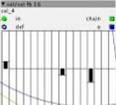

Hello,
Is it possible to set each sequencer step by pressing a key on my MIDI controller?
Kind regards,
Andreas

Hello,
Is it possible to set each sequencer step by pressing a key on my MIDI controller?
Kind regards,
Andreas
yes, but your question is a bit vague .. Are you referring to any of the many available sequencer objects ?. I did something similar to what you want to achieve with a table, where first I determine which position of the table and then I introduce pitch information
Hello,
Thank you for replying.
I'll try to be more specific.
So whenever I try to make a sequencer patch, I use a step sequencer to trigger the vca envelope.
I also use a pitch sequencer thingy (object: SEL) to command the oscillator pitch.

So my question is: Is it possible to set the pitch of the SEL object that commands the VCO with the keys (read notes) of my midi controller? Instead of dragging the vertical bars up and down for each step, can I chose for example for the first step a C, the next step a F,..,etc..
I hope this is somewhat clearer..
Kind regards,
Andreas
Yes you can do so with the example servando posted. Your midi note input would be the "val" inlet and the step inlet is the index of the table "+ a"
{kind=link}